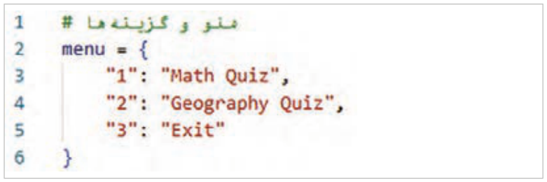
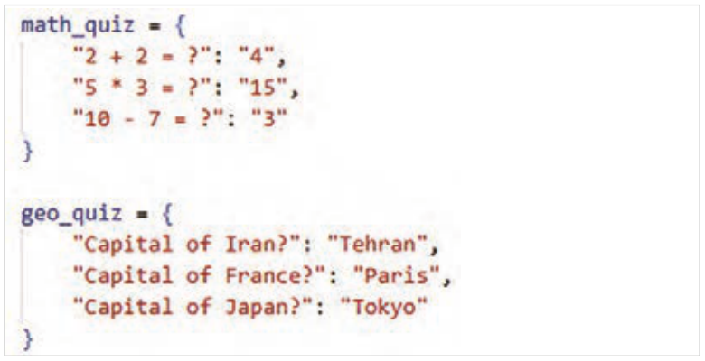
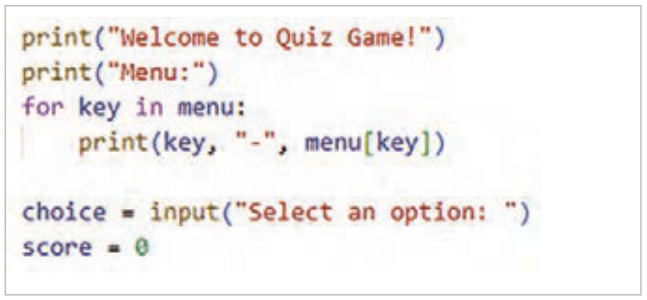
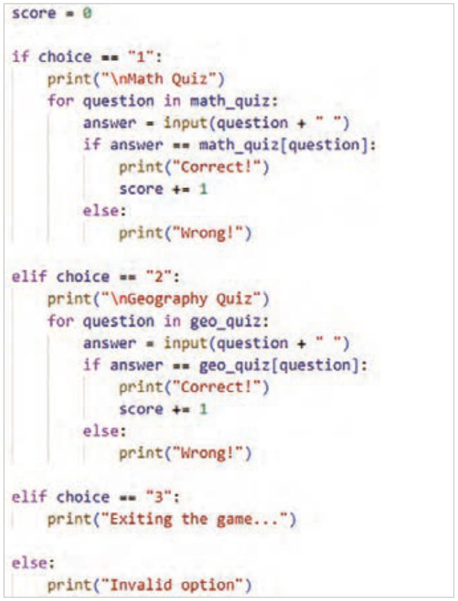
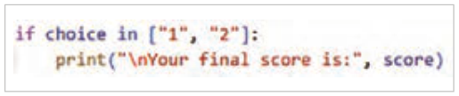
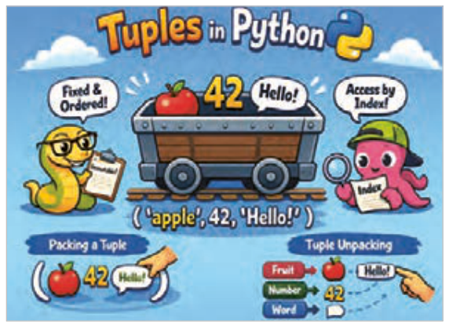

در این بازی ابتدا منویی که شامل انواع سؤالات است نمایش داده میشود و کاربر سؤال موردعلاقهاش را انتخاب میکند و سپس به سؤالات پاسخ میدهد، در صورت پاسخ صحیح یک امتیاز دریافت میکند و در غیر این صورت پیام پاسخ و در صورت تمامشدن سؤالات، امتیاز کاربر نمایش داده میشود.
مرحله ۱: در این مرحله باید منویی ایجاد کنید که شامل انواع سؤالات باشد. برای شروع دو نوع سؤال در منو قرار دهید. در دیکشنری menu به هر عدد یک نوع سؤال اختصاصیافته است. در صورت انتخاب عدد ۳، کاربر از بازی خارج میشود (شکل118).

شکل ۱۱۸
مرحله 2: سؤالات مربوط به هر نوع سؤال را بنویسید. دو دیکشنری math_quiz برای سؤالات ریاضی و geo_quiz برای سؤالات مربوط به مکانهای جغرافیایی، هر کدام سه عنصر که شامل سؤال و پاسخ آن است (شکل119).

شکل ۱۱۹
صفحه ۵۸
مرحله ۳: در این مرحله دستوراتی بنویسید که منوها را نمایش دهد.
بعد از نمایش پیام خوشامدگویی و نمایش عنوان menu: برای هر یک از عناصر داخل دیکشنری، شماره menu و متن آن با یک علامت "-" از هم جدا شده و نمایش داده میشود تا کاربر بتواند از میان آنها یکی را انتخاب کند (شکل120).

شکل ۱۲۰

شکل ۱۲۱
مرحله ۴: در این مرحله دستورات مربوط به انتخاب منو را بنویسید (شکل121).
صفحه ۵۹
مرحله 5: در این مرحله دستوراتی بنویسید که امتیازات کسبشده را نمایش دهد. امتیاز کاربر در صورت انتخاب گزینه "1" و یا "2" نمایش داده میشود (شکل122).

شکل ۱۲۲
مرحله 6: کدها را نوشته و برنامه را اجرا کنید!
توپِل (Tuple)
توپل در پایتون دنبالهای از دادههای ترتیبی و غیر قابل تغییر است. به کمک توپلها میتوانید چندین مقدار از نوعهای دادهای مختلف را در یک متغیر ذخیره و روی آنها عملیات انجام دهید. این ساختار داده را زمانی استفاده کنید که بخواهید دادهها در طول برنامه، تصادفاً توسط خود شما و یا سایر برنامهنویسان هم تیمی شما، تغییر نکنند.

شکل ۱۲۳
ایجاد Tuple
tuple_name = (data1, data2, data3,…)
Page 57
The Quiz game project
Figure 117
In this game a menu of question types is shown first. The user picks the kind of question they like and answers the questions; a correct answer earns one point, otherwise the answer is shown, and when the questions are over the user's score is shown.
Step 1: in this step create a menu of question types. To start, put two kinds of questions in the menu. In the menu dictionary each number is assigned to a kind of question. If the number 3 is chosen, the user leaves the game (Figure 118).
Figure 118
Step 2: write the questions for each kind. Two dictionaries, math_quiz for math questions and geo_quiz for questions about geographical places, each have three elements made of a question and its answer (Figure 119).
Figure 119
Page 58
Step 3: in this step write the statements that show the menus.
After the welcome message and the title menu: are shown, for each element of the dictionary the menu number and its text are shown separated by a "-" sign, so that the user can choose one of them (Figure 120).
Figure 120Figure 121
Step 4: in this step write the statements for choosing from the menu (Figure 121).
Page 59
Step 5: in this step write the statements that show the points earned. The user's score is shown when option "1" or "2" is chosen (Figure 122).
Figure 122
Step 6: write the code and run the program!
Tuples (Tuple)
A tuple in Python is an ordered sequence of data that cannot be changed. With tuples you can store several values of different data types in one variable and work with them. Use this data structure when you want the data not to be changed by accident during the program, by you or by other programmers on your team.